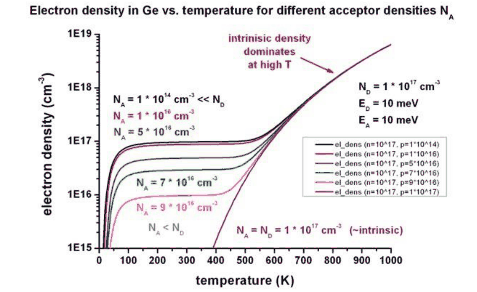

Module 17a
Temperature and the Semiconductor
What temperature does to a semiconductor and to the simplest device built from one: the range a part meets in space, the intrinsic carriers of different materials, dopants that freeze out, mobility, the leakage and forward voltage of a p–n junction, and the three ways the course keeps a device working at either extreme.
A semiconductor device works because its carrier densities are set by design. Doping fixes how many electrons or holes a region holds, and junctions and gates control where they go. M01 showed that this control holds only over a window of temperature: below it the dopants keep their carriers bound, above it carriers generated across the gap outnumber the dopants. Temperature enters every other quantity too, through the gap itself, the mobility and the leakage of every junction, so a part that meets a temperature outside its window loses its function long before anything melts.
This module follows that dependence from the material to the device. It sets out the temperatures a part meets in space (§1), how the intrinsic carrier density depends on temperature and on the gap of the material (§2), how dopants freeze out at low temperature (§3), how mobility changes (§4), and what all of this does to a p–n junction's leakage and forward voltage, including the diode used as a thermometer (§5). §6 gathers the three mitigations the course draws from it, with the simulator runs of Lecture 14 that demonstrate them, and §7 states what the course's summary, that hot silicon becomes a metal and cold silicon an insulator, means physically. The transistors built on these effects are the subject of M17b, and the silicon carbide integrated circuits that run on Venus of M17c.
1 · The temperatures a part meets
A spacecraft does not hold its electronics at the temperature of its surroundings. An exposed surface swings between sunlight and shadow; a box behind thermal control sees a far narrower range. The survey of flight environments made for the NASA Electronic Parts and Packaging Program (Plante and Lee 2005), whose table Deck 12 p. 9 reproduces, lists the unmanaged extremes and the number of cycles a year by mission type: low Earth orbit −65 to +125 °C; geostationary orbit −196 to +128 °C, 90 cycles a year; the lunar surface −171 to +111 °C, 13 cycles; the Martian surface −143 to +27 °C, 356 cycles; a trans-atmospheric vehicle −200 to +260 °C over a short mission; and the pressurized module of a crewed station +18.3 to +26.7 °C, with no significant cycling. The surface of Venus, at 465 °C (M03 §2), lies beyond them all.
The number of cycles follows from what drives the swing, which in orbit is Earth's shadow. A spacecraft in low orbit passes through it on almost every revolution: at 200 km a revolution takes about 88 minutes, which gives about 6,000 cycles a year. Higher up the shadow subtends a smaller angle, and an orbit enters it only while the Sun lies within arcsin(RE/r) of the orbit plane, with RE Earth's radius and r the orbit's radius: about 14° at 20,000 km and 8.7° at geostationary altitude, so high orbits are eclipsed only in seasons. A geostationary satellite is shadowed in two seasons of about 45 days around the equinoxes, at most about 70 minutes a day, which gives the 90 cycles. At 20,000 km a revolution takes about 12 hours, 740 revolutions a year, but an equatorial orbit is eclipsed on only about 300 of them and an inclined orbit such as GPS's on fewer; the survey's 780 assumes one cycle per revolution. The Martian day of 24.6 hours gives the 356; the survey's 13 lunar cycles assume a 28-day lunar day, and the 29.5-day synodic month gives about 12.
These are environmental temperatures. The survey notes that a temperature-managed box sees a range smaller by perhaps as much as half, that the projects it surveyed specified about −50 to +50 °C for standard missions, and that parts are commonly qualified to the military specification, −55 to +125 °C. Thermal design, the radiative balance of M03 §2 with heaters, radiators and insulation, holds the electronics inside that window. The rest of this module concerns what the semiconductor does when it leaves it: on an exposed mechanism, in a lunar night, on the surface of Venus, or beside an engine.
The low-orbit cycle count in Deck 12 p. 9
The survey's table, and the slides that reproduce it (Deck 12 p. 9, Deck 13 p. 9), give the low-orbit count as "6,000 for a height of 2 km". No orbit exists at 2 km; 6,000 cycles a year is the count for an orbit near 200 km, whose period is about 88 minutes, and the professor corrected the figure in Lecture 13. The same row's "780 for 20,000 km" belongs to medium orbit, not low orbit.
2 · Intrinsic carriers across the gap ladder
Equation (1.2) of M01 gives the intrinsic concentration as ni = √(NcNv) exp(−Eg/(2kT)): the number of carriers thermally excited across the gap of a pure crystal. Its temperature dependence has three parts. The effective densities of states Nc and Nv grow as T3/2; the exponential, with kT in its denominator, grows much faster; and the gap itself shrinks as the crystal warms. Lattice expansion and the interaction of electrons with lattice vibrations lower the conduction-band minimum relative to the valence-band maximum, and a three-parameter fit describes the result over a wide range.
With the course's 1.0×10¹⁰ cm⁻³ at 300 K, densities of states scaled as T3/2 and the gap of (17a.1), silicon's intrinsic concentration becomes 5.3×10¹² cm⁻³ at 400 K, 2.6×10¹⁴ at 500 K, 3.7×10¹⁵ at 600 K and 8×10¹⁶ at 773 K (500 °C). Near room temperature it doubles about every 9 K, so ni², which governs the diffusion leakage of §5, doubles about every 4 K. The material stays extrinsic while ni remains below the doping, so a more heavily doped region stays extrinsic to a higher temperature. Setting ni(T) equal to the doping gives the temperature at which control by doping ends.
| Doping (cm⁻³) | Silicon reaches ni = N at | Note |
|---|---|---|
| 10¹⁴ | 472 K (199 °C) | lightly doped substrates and drift regions |
| 10¹⁵ | 547 K (274 °C) | the case of M01 §4 (545 K) |
| 2×10¹⁵ | 574 K (301 °C) | the default doping of the simulator runs in §6 |
| 10¹⁶ | 648 K (375 °C) | |
| 10¹⁷ | 789 K (515 °C) | |
| 10¹⁸ | 996 K (723 °C) |
Computed here from equation (1.2) with the gap of (17a.1), NcNv ∝ T³ and the course's 1.0×10¹⁰ cm⁻³ at 300 K.
A wider gap moves the whole dependence to higher temperature, and the effect is exponential in the gap. Deck 14 and three other decks show the same chart (Figure 2), on which every material is a nearly straight line: plotted against 1000/T, the logarithm of ni falls by about 2.5 decades per unit of 1000/T for every electronvolt of gap, the gap here being the value extrapolated linearly to 0 K (1.20 eV for silicon), not the room-temperature gap, because the gap itself shrinks as the crystal warms. Germanium (0.66 eV at 300 K) reaches 10¹⁵ cm⁻³ near 390 K. Gallium arsenide (1.42 eV) holds 2×10⁶ cm⁻³ at 300 K and about 10¹² at 500 K (0.8–2×10¹², depending on how the higher conduction-band valleys are counted), 100 to 300 times below silicon. 4H silicon carbide (3.23 eV), the material of NASA's high-temperature circuits, holds about 8×10⁹ cm⁻³ at 773 K, seven orders of magnitude below silicon at the same temperature, and would reach 10¹⁵ cm⁻³ only near 1,340 K.
The chart's lines are straight-line fits, good to a factor of a few: its silicon line crosses 10¹⁵ cm⁻³ near 570 K where the calculation above gives 547 K, its GaAs line reads five times the 2×10⁶ cm⁻³ quoted above at 300 K, and its silicon line three times low at 773 K. Its 6H-SiC line, for the polytype of the chart rather than the 4H of the circuits, lies above the 4H values quoted here at 500 °C but below them at the highest temperatures, because the straight-line fit is shallower than the gap-based calculation; 6H's narrower gap, about 3.0 eV, would by itself put it above 4H throughout. The order of the lines, and the many decades between them, are what the chart is for.
The InN line on the chart
The chart of Deck 14 p. 4 draws indium nitride between GaAs and 6H-SiC. Its line falls 5.35 decades per unit of 1000/T, the slope of a gap near 2 eV, the value accepted before 2002, measured on degenerate, oxygen-rich polycrystalline films. Measurements on better crystals from 2002 on give about 0.7 eV (Wu et al. 2002: 0.7–0.8 eV; Davydov et al. 2002), which puts its line close to germanium's. The redrawing leaves it out; the other lines are unaffected.
3 · Freeze-out and incomplete ionization
At the cold end the carrier population falls below the doping, because the thermal energy no longer ionizes every dopant. M01 §4 worked the case of silicon doped with 10¹⁵ cm⁻³ of phosphorus, whose donor level lies 45 meV below the conduction band: 15 % of the donors are ionized at 50 K, half at 65 K and 90 % at 92 K. The occupancy of a donor level follows the same Fermi statistics as the bands, with a degeneracy factor of 2 because the bound electron may have either spin, and charge neutrality, n = Nd⁺ in an uncompensated n-type region, then fixes the electron density.
Equation (17a.2) shows why heavier doping freezes out at a higher temperature: a larger n raises the chance that a donor is reoccupied. Silicon doped with 10¹⁷ cm⁻³ of phosphorus, treated with the same 45 meV, is 14 % ionized at 77 K, 32 % at 100 K, 69 % at 150 K and 96 % at 300 K, against 74 % at 77 K for 10¹⁵. At this concentration neighbouring donors already lower the effective depth of the level, so these fractions are lower bounds. The ionized fraction falls, but the number of free electrons still rises with doping: at least 1.4×10¹⁶ cm⁻³ at 77 K for 10¹⁷, against 7.4×10¹⁴ for 10¹⁵. Near and above the metal–insulator transition, 3.7×10¹⁸ cm⁻³ for phosphorus (M01 §3), the donor electrons form a band of their own and the region conducts at any temperature, which is why degenerately doped contacts work when cold.
Silicon carbide's dopants lie deeper, and its freeze-out moves up to room temperature. Nitrogen, the usual donor, occupies two inequivalent lattice sites in 4H-SiC, with ionization energies of about 30–80 meV on the hexagonal site and 80–130 meV on the cubic site; values near 52 and 92 meV, from infrared absorption, are the common choice (Götz et al. 1993). Aluminium, the usual acceptor, lies about 0.22 eV above the valence band in lightly doped material and about 0.19 eV at 10¹⁸ cm⁻³, the value most often used in device models. With these levels, 10¹⁷ cm⁻³ of nitrogen is 84 % ionized at 300 K, 78 % at 0 °C and 34 % at 150 K, while 10¹⁸ cm⁻³ of aluminium is 6 % ionized at 300 K and 33 % at 500 K. A p-type silicon carbide layer therefore holds a small fraction of its holes at room temperature and gains them as it heats.
NASA's silicon carbide integrated circuits show the consequence directly. The conductance of their 4H-SiC n-layer, and with it the frequency of a ring oscillator built from the layer, is highest near 0 °C. Below 0 °C incomplete ionization reduces the electron density; above it the electron density still rises, but slowly, and the fall of mobility through phonon scattering, the subject of §4, dominates, so that frequency and power fall by a factor of roughly 4–5 between 0 and 500 °C (Deck 16a p. 60). The same circuits start and run in the cold without the cold-start problems of other technologies (Deck 16a p. 59).
Deck 8 p. 12 shows a second low-temperature effect, compensation, in germanium (Figure 4). When a region contains both donors and acceptors, the acceptors capture electrons from the donors, and only the excess, Nd − Na, remains free on the extrinsic plateau. In the simulated crystal both levels lie 10 meV from their bands, and freeze-out sets in below about 150 K and halves the electron density near 55 K, about where 10¹⁵ cm⁻³ of phosphorus in silicon freezes out: the shallower level is offset by the hundredfold higher doping. Germanium's real dopants are similarly shallow, about 10–14 meV for the common donors and 11 meV for the common acceptors. At the high end the curves converge from about 600 K and follow the intrinsic line above about 700 K, and a fully compensated crystal follows it at every temperature.

4 · Mobility against temperature
The mobility of M01 (1.6) is limited by collisions, and the two kinds of collision respond to temperature in opposite directions. Lattice vibrations, quantized as phonons, grow more numerous as the crystal warms, so a carrier is scattered more often and its mobility falls: scattering by acoustic phonons alone would give a fall as T−3/2, and the measured fall in pure silicon near room temperature is steeper. Ionized dopants deflect a carrier by their Coulomb field, and a faster carrier is deflected less, so impurity scattering weakens as temperature rises (Sze & Ng §1.5.1).
For a device the fall of mobility when hot means a larger series resistance in every neutral region and channel: the resistance of a lightly doped silicon layer at a fixed carrier density rises about 3.4-fold between 300 and 500 K for n-type material (3.1-fold for p-type), and drive current falls with it. This is the high-temperature half of the silicon carbide result of §3, and the mobility term that competes with threshold-voltage shift in the transistors of M17b. In the cold the mobility of pure silicon rises about 14-fold by 77 K, to about 2×10⁴ cm²/V·s for electrons (Sze & Ng Fig. 16); (17a.3) overestimates it below about 150 K, where the power law no longer holds. In doped material impurity scattering and freeze-out take over first.
5 · The p–n junction against temperature
The diode equation of M01 §6, I = I0(eqV/kT − 1), carries its temperature dependence almost entirely in the saturation current I0. Under reverse bias the current is a leakage that should be negligible; under forward bias the voltage at a given current falls as the junction warms. Both follow from the origin of I0. Minority carriers generated thermally in the neutral regions, within a diffusion length of the junction, diffuse to its edge and are swept across by its field. Their density is ni²/N on each side, which makes the current proportional to ni².
A second leakage term comes from the depletion region itself. There the carrier densities are far below ni, so defect levels near midgap, such as those of M11, emit electrons and holes in pairs, and the field separates them before they recombine. Generation in the depletion region is proportional to ni rather than ni², and to the region's width. NASA's tutorial writes the two terms together for a p⁺n junction (Deck 16a p. 50, after Neudeck, Okojie and Chen 2002).
The two terms scale differently, so one dominates at each end. For an illustrative silicon p⁺n junction with Nd = 10¹⁶ cm⁻³, τ = 1 µs and W = 1 µm, equation (17a.5) gives 8×10⁻⁸ A/cm² at 300 K, almost all of it generation current, as is usual for silicon at room temperature. The leakage rises 35-fold by 350 K, 545-fold by 400 K, 6×10⁴-fold by 500 K and 7×10⁶-fold by 600 K. The diffusion term, growing as ni², overtakes the generation term near 490 K, which is why the diffusion current dominates in silicon at high temperature and in germanium already at room temperature (Sze & Ng §2.3.2). At 500 K, when the leakage has grown 6×10⁴ times, ni is still only 2.6 % of the doping: the junction fails as an insulator long before the material becomes intrinsic.
The power laws on Deck 14 pp. 6–7
The slides summarize the temperature dependence as "ni² ∝ T³" and "I ∝ T⁴". T³ is only the prefactor of ni², the product NcNv; the factor exp(−Eg/kT) dominates. From 25 to 75 °C ni² rises about 1,300-fold, where T⁴ would give 1.86-fold. The slide's own measured curves rise roughly 20- to 35-fold at a fixed 0.4 V; at fixed voltage the factor eqV/kT falls about tenfold over this range, so the measured rise corresponds to I0 growing a few hundredfold, still far beyond T⁴. The remaining factor of T in the slide's T⁴ assumes a constant mobility; with (17a.3), D = µkT/q falls as the crystal warms, and the power-law prefactor of I0 is about T2.3, the γ of (17a.6). The course's point, that the current "depends on temperature" strongly, is the exponential; M01 §6's rule that I0 doubles about every 5 K is the same statement.
Forward voltage, and the diode as a thermometer
Under forward bias the same I0 sets the voltage needed for a given current, VF = (kT/q) ln(I/I0). Because I0 rises so fast, the voltage at a fixed current falls as the junction warms, almost linearly, by about 2 mV/K in silicon: on the measured curves of Deck 14 p. 7, a current of 100 µA needs about 0.60, 0.48 and 0.385 V at −25, 25 and 75 °C. Writing I0 ∝ Tγ exp(−Eg0/kT) and differentiating gives the slope.
A silicon diode driven at a constant small current is therefore a thermometer, and one of the most common in cryogenic and space instruments. Lake Shore's DT-670 sensor, which Lecture 14 shows, is driven at 10 µA and reads about 0.56 V with a slope of −2.30 mV/K near 300 K, and 1.03 V with −1.73 mV/K at 77 K. It is usable from 1.4 K to 500 K in some packages (to 420 K in the others), either on the standard DT-670 curve or with an individual calibration. Equation (17a.6) reproduces the room-temperature slope (Figure 7); at 77 K the ideal-diode model gives a slope near −1.9 mV/K against the measured −1.73, because the simple model's assumptions weaken in the cold. Below about 25 K the measured slope rises steeply, to −26.8 mV/K at 10 K and −31.6 mV/K at 4.2 K, so the sensor is most sensitive in the liquid-helium range. The measured curves of Deck 14 p. 7 belong to a generic diode at 100–1,000 µA, not to this sensor, so the two sets of voltages differ.
Reverse breakdown, the last feature of the diode's characteristic, also shifts with temperature, in a direction that identifies its mechanism (M01 §6): the avalanche breakdown voltage rises as the crystal warms, because phonon scattering takes energy from the accelerated carriers, while the tunnelling breakdown voltage falls, because the gap narrows.
A third mechanism of breakdown belongs to temperature itself. The reverse current dissipates power in the junction, the power raises its temperature, and the higher temperature raises the reverse current, which grows with ni or ni² by (17a.5). When this positive feedback outruns the removal of heat, the current runs away: breakdown by thermal instability. It is a major effect in narrow-gap semiconductors such as germanium (Sze & Ng §2.4.1), and in any junction whose leakage is already large because it is hot.
6 · Three mitigations, and the simulator runs
Lecture 14 ends on its take-home message, and the physics of §2–§5 explains each part of it.
Heavier doping helps at both ends of the temperature range; a wider gap helps when hot; a narrower gap helps when cold.
Heavier doping. When hot, a heavily doped region stays extrinsic to a higher temperature (the table of §2: 547 K at 10¹⁵ cm⁻³ against 996 K at 10¹⁸), its diffusion leakage, ∝ ni²/N, is smaller, and its junctions keep their built-in barrier: for a symmetric junction the barrier falls from 0.63 V at 300 K to 0.18 V at 500 K at 2×10¹⁵ cm⁻³, but stays at 0.71 V at 500 K at 10¹⁸ cm⁻³. When cold, a heavier doping holds more free carriers, and above the metal–insulator transition it does not freeze out at all (§3). The price is a lower mobility, from impurity scattering, and thinner depletion regions, whose breakdown voltage is lower and whose tunnelling current is larger (M01 §6).
A wider gap when hot. Every leakage term carries ni or ni², and the gap enters ni exponentially. At 773 K, 4H-SiC's ni of about 8×10⁹ cm⁻³ against silicon's 8×10¹⁶ makes its generation leakage roughly seven orders of magnitude smaller at equal lifetime and width. This is the basis of the silicon carbide electronics of M17c.
A narrower gap when cold. At 77 K silicon's ni is about 3×10⁻²⁰ cm⁻³, so its ideal junction needs about 0.9 V to pass 1 µA/cm²; germanium's, about 10⁻⁶ cm⁻³, needs about 0.5 V (computed for a symmetric junction at 2×10¹⁵ cm⁻³, the result changing by a few hundredths of a volt for lifetimes between 10 ps and 1 µs). Germanium's shallow dopants help as well: at 10–14 meV they remain about 98 % ionized at 77 K at 2×10¹⁵ cm⁻³, where silicon's 45 meV phosphorus is 63 % ionized.
The nanoHUB p–n junction tool
Lecture 14 demonstrates these effects with a simulator on nanoHUB.org, the free online simulation service of the Network for Computational Nanotechnology, which requires a free account (Deck 14 pp. 13–20). The p–n junction tool solves the drift–diffusion equations for a one-dimensional junction. Its inputs are the donor and acceptor concentrations, the lengths of the p, intrinsic and n regions, the material (Si, Ge, GaAs or InP), the minority-carrier lifetimes, the ambient temperature from 77 K, its lowest setting, to 500 K, and the applied voltage. Its outputs are the current–voltage curve on linear and logarithmic axes, the band diagram, the carrier densities and the field, and the Compare control overlays runs. In the screenshots the voltage axis is labelled "Gate Voltage", but it is the diode bias; the current is a density in A/cm², a unit the tool's own plot shows (Deck 14 p. 16) and the cropped run plots omit.
| Run (Deck 14) | What the plot shows | Why |
|---|---|---|
| Si, 2×10¹⁵ cm⁻³, 300 K (pp. 21–22) | A rectifying curve with a knee near 0.45–0.5 V on the linear plot, about 1 A/cm² at 0.36 V on the log plot | The baseline: built-in barrier 0.63 V; the short lifetimes of the runs make the junction leaky, so the knee sits below the textbook 0.6–0.7 V |
| The same at 400 and 500 K (pp. 21–22) | At 500 K a nearly straight line from the first bias point to about 40 A/cm² at 0.9 V, which the deck calls a diode that "becomes a metal"; at high bias the cooler curves cross above it | The barrier has fallen to 0.18 V, so the junction barely blocks, and the current is set by the series resistance of the neutral regions, larger when hot because the mobility is lower (§4). The material is not intrinsic: ni = 2.6×10¹⁴ cm⁻³ is 13 % of the doping, and n exceeds Nd by under 2 % |
| The same at 100 K (p. 21) | On the log plot, current from about 0.5 V, rising about a decade per 40 mV to about 0.1 A/cm² at 0.9 V; invisible on the linear plot | A slope of 40 mV per decade at 100 K is an ideality factor of 2: the current comes from recombination in the depletion region, which grows as ni eqV/2kT, not from the ideal diffusion current of (17a.4), which would need about 0.85 V |
| The same at 77 K (p. 25) | No visible current within the 0.9 V sweep (full scale 0.05 A/cm²) | ni² is about 10⁻³⁹ cm⁻⁶: the ideal junction needs about 0.9 V, and even the recombination current only about 0.8 V; the donors are still about 63 % ionized at this doping (see the box below) |
| Si, 10¹⁸ cm⁻³, 500 K (p. 24) | Rectification restored, with a turn-on near 0.3–0.4 V | The barrier stays at 0.71 V; the region is far from intrinsic |
| GaAs, 2×10¹⁵ cm⁻³, 500 K (p. 23) | A lower current than silicon at every voltage, with a visible knee | ni about 9×10¹¹ cm⁻³, nearly 300 times below silicon's |
| Si, 10¹⁸ cm⁻³, 77 K (p. 25) | Current from about 0.85 V | The ideal diffusion current falls with doping, as 1/N, so the turn-on comes from parts of the tool's model beyond (17a.4) |
| Ge, 77 K (Lecture 14) | A diode characteristic within the sweep | Ideal turn-on near 0.5 V, and shallow dopants that stay ionized |
What stops the current at 77 K
Deck 14 p. 25, by its inset of the freeze-out curve, and Lecture 14 attribute the very low current at 77–100 K to frozen dopants. At 2×10¹⁵ cm⁻³ the phosphorus is still about 63 % ionized at 77 K, by (17a.2). The decisive factor is the intrinsic density: I0 ∝ ni² falls by about 60 orders of magnitude between 300 and 77 K, and the recombination current, ∝ ni, by about 30, so even a fully ionized junction does not conduct appreciably until 0.8–0.9 V. Freeze-out matters in the cold through the series resistance of lightly doped regions and the carrier density of doped resistors and JFET channels, the effect seen in silicon carbide near 0 °C (§3); a MOSFET's inversion layer, drawn in by the gate field, is unaffected (§7).
Deck 14 p. 24 states that "higher doping only works below 600 K". The 600 K is roughly where the 10¹⁵ cm⁻³ curve plotted beside it runs off its plot; that curve reaches ni = N near 545 K. At 10¹⁸ cm⁻³ silicon stays extrinsic to about 1,000 K, and the junction's barrier at 600 K is still 0.58 V. The limit belongs to the doping, not to silicon.
7 · What "silicon becomes a metal" means
Decks 12 to 15 summarize the module in two sentences: at high temperature silicon becomes a metal; at low temperature it becomes an insulator, and p-type and n-type regions, diodes and transistors can no longer be made. In the course these sentences describe the loss of control by doping at the two ends of the range. As statements about conduction they need correcting.
Hot silicon does not conduct like a metal. Intrinsic silicon has a resistivity of about 14 Ω·cm at 545 K, 1 Ω·cm at 700 K and 0.05 Ω·cm at 1,000 K, from ρ = 1/(qni(µn + µp)) with (17a.1) and (17a.3), against 1.7×10⁻⁶ Ω·cm for copper at room temperature; and it falls as the temperature rises, where a metal's rises. What hot silicon loses is the difference between its regions. As ni approaches the doping, n-type and p-type regions converge, a junction's barrier collapses and it stops rectifying, and well before that its leakage destroys isolation (§5). NASA's tutorial makes the same point: leakage current, rather than intrinsic conduction, is often what limits a device or circuit at high temperature (Deck 16a p. 50). In a MOSFET the off-state current becomes the leakage of the drain junction, the subject of M17b §1.
Cold silicon still makes devices. Regions doped beyond the metal–insulator transition do not freeze out, and the inversion layer of a MOSFET is drawn in by the gate field, not supplied by dopants, so contacts and channels keep working. What the cold takes away is the carriers of lightly doped regions, which raises their resistance, and the low turn-on voltage of junctions, which rises to about 0.9 V at 77 K.
The course's summary and the physics
In the course's usage "silicon becomes a metal when hot and an insulator when cold" is the summary of this module: doping no longer sets the carrier densities at either end of the range. Physically, hot intrinsic silicon remains a semiconductor whose resistivity, 0.05 Ω·cm even at 1,000 K, is four orders of magnitude above a metal's and falls with temperature; the hot device fails first by junction leakage. Cold silicon keeps degenerately doped contacts and field-induced channels; what it loses is the carrier density of lightly doped regions.
Summary
- Unmanaged extremes run from −65 to +125 °C in low orbit and −196 to +128 °C in geostationary orbit, with about 6,000 and 90 cycles a year (high orbits are eclipsed only in seasons); managed electronics boxes are held near −50 to +50 °C, and military-grade parts are specified from −55 to +125 °C. The survey's "2 km" is 200 km.
- The gap shrinks as Eg(T) = Eg(0) − αT²/(T + β) (17a.1): silicon 1.123 eV at 300 K, 1.063 eV at 500 K.
- Silicon's ni doubles about every 9 K near room temperature (ni² every 4 K); it reaches the doping at 547 K for 10¹⁵ cm⁻³ and 996 K for 10¹⁸. 4H-SiC holds about 8×10⁹ cm⁻³ at 773 K, seven orders below silicon.
- Freeze-out follows (17a.2): phosphorus in silicon is 74 % ionized at 77 K at 10¹⁵ and at least 14 % at 10¹⁷; nitrogen in 4H-SiC (52 and 92 meV) is 84 % ionized at 300 K, aluminium (0.19 eV at 10¹⁸, 0.22 eV when lightly doped) only 6 % at 10¹⁸. NASA's SiC circuits run fastest near 0 °C.
- Compensation leaves Nd − Na free on the plateau (Deck 8 p. 12, germanium).
- Lattice-limited mobility falls as T−2.42 (electrons) and T−2.20 (holes) (17a.3): at 500 K the electron mobility is 29 % of its room-temperature value (holes 33 %).
- I0 = qAni²(Dp/LpNd + Dn/LnNa) (17a.4); generation adds qAniW/2τ (17a.5). Generation dominates silicon at room temperature and diffusion when hot, above about 490 K for a 10¹⁶ cm⁻³, 1 µs, 1 µm junction (the crossover moves with doping, lifetime and width); that junction's leakage rises about 6×10⁴-fold by 500 K while ni/N is only 0.026.
- "I ∝ T⁴" understates the dependence: ni² rises 1,300-fold from 25 to 75 °C.
- The forward voltage at constant current falls by about 2 mV/K (17a.6): −2.3 mV/K at 0.56 V and 300 K, the basis of the DT-670 diode thermometer.
- Mitigations: heavier doping at both ends, a wider gap when hot, a narrower gap when cold. At 500 K the barrier of a 2×10¹⁵ junction falls to 0.18 V; at 10¹⁸ it stays at 0.71 V. At 77 K silicon needs 0.8–0.9 V to conduct, germanium about 0.5 V.
- Hot intrinsic silicon is not a metal (0.05 Ω·cm at 1,000 K, falling with temperature); devices fail first by leakage. Cold silicon keeps degenerate contacts and field-induced channels.
Where this came from
| Opening | Decks 12–14 and Lecture 14 for the scope; M01 §2 and §4 for the carrier statistics this module extends |
| §1 | Deck 12 p. 9, reproducing Table 7 of J. Plante and B. Lee, Environmental Conditions for Space Flight Hardware: A Survey, NASA Goddard Space Flight Center for the NASA Electronic Parts and Packaging Program (2005), NTRS 20060013394, with its text on managed temperatures, surveyed ranges and the military specification. Orbital periods from M07 (7.1); eclipse seasons from the same survey, and the eclipse condition and the medium-orbit count computed here for a cylindrical shadow; the correction of the 2 km figure from Lecture 13; synodic month 29.53 days. Venus from M03 §2 |
| §2 | Deck 12 pp. 28–30, Deck 13 pp. 24–26, Deck 14 pp. 3–4, Deck 15 p. 5 (the chart, after R. T. Kemerley, H. B. Wallace and M. N. Yoder, "Impact of wide bandgap microwave devices on DoD systems", Proc. IEEE 90, 1059 (2002); lines redrawn from straight-line fits to the slide); Deck 16a p. 50 (a related chart, after Neudeck, Okojie and Chen 2002). Gap against temperature: Y. P. Varshni, Physica 34, 149 (1967); silicon and GaAs constants from S. M. Sze and K. K. Ng, Physics of Semiconductor Devices, 3rd ed. (Wiley, 2007), Fig. 6; germanium, GaAs and 4H-SiC parameters from the Ioffe Institute's NSM database (4H-SiC after Goldberg et al. 2001). Intrinsic temperatures and concentrations computed here. InN gap: V. Yu. Davydov et al., Phys. Status Solidi B 229, R1 (2002) and 230, R4 (2002); J. Wu et al., Appl. Phys. Lett. 80, 3967 (2002). GaAs ni at 500 K from the Ioffe NSM conduction-band models |
| §3 | M01 §3–§4 (45 meV, the metal–insulator transition, the 10¹⁵ cm⁻³ case); Deck 8 p. 12 (germanium compensation, Figure 4); Deck 16a pp. 59–60 (P. G. Neudeck, ICSCRM 2023 tutorial, after Neudeck et al., NTRS 20190027358). Nitrogen in 4H-SiC: W. Götz, A. Schöner, G. Pensl, W. Suttrop et al., J. Appl. Phys. 73, 3332 (1993); ranges of measured values, aluminium at about 220 meV when lightly doped and the 191 meV common in device models, from J. Burin et al., "TCAD parameters for 4H-SiC: a review", arXiv:2410.06798 (2024). Germanium dopant levels from the Ioffe NSM database. Ionized fractions computed here from (17a.2) |
| §4 | Deck 14 p. 8 (the mobility figure); Sze & Ng (2007) §1.5.1 and Fig. 16, after C. Jacoboni, C. Canali, G. Ottaviani and A. Alberigi Quaranta, Solid-State Electron. 20, 77 (1977), also for the measured mobility of pure silicon at 77 K; mobilities at 300 K as in M01 (1.6) |
| §5 | Deck 14 pp. 6–7, 12 and Lecture 14 (the diode equation, I0, the thermometer); Deck 16a p. 50 (the two-term leakage, after P. G. Neudeck, R. S. Okojie and L.-Y. Chen, Proc. IEEE 90, 1065 (2002)); Sze & Ng (2007) §2.3.2 (generation and recombination currents, which term dominates) and §1.5.4, Eqs. (98)–(99), p. 44 (generation lifetime). Leakage figures computed here. Forward-voltage coefficient derived here from (17a.4); DT-670 values from the Lake Shore Cryotronics DT-670 data sheet. Breakdown against temperature: M01 §6; thermal instability: Sze & Ng (2007) §2.4.1. DT-670 low-temperature slopes and range of use from the same data sheet |
| §6 | Deck 14 pp. 13–26 and Lecture 14 (the take-home message, the nanoHUB p–n junction tool, its 77 K lowest setting and its runs); Deck 15 pp. 3–7 (the same runs recapped). Barriers, turn-on voltages and ionized fractions computed here; recombination current and ideality after Sze & Ng (2007) §2.3.2 |
| §7 | Deck 12 pp. 31–32, Deck 13 pp. 27–28, Deck 14 pp. 22, 26, Deck 15 p. 4 (the summary); Deck 16a pp. 49–50 (leakage as the limit). Resistivities computed here; copper's from standard tables |